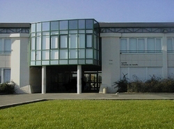

MON PARCOURS
-

Baccalauréat Scientifique
Lycée Charles De Gaulle
Spécialité SVT Option Physique-Chimie. Obtenue avec Mention Assez Bien.
Septembre 2013 - Juillet 2016
-
DUT Informatique
Institut Universitaire Technologie d'Amiens
Formation Générale en informatique en 2 ans. J'ai appris les bases en programmation objet et procédurale ainsi qu'en réseau et en développement web. Nous avons poussé la formation jusqu'à l'apprentissage de certaines librairies (jQuery) et certains frameworks (CakePHP) ainsi que la programmation MVC. Formation à la gestion de projet et à la communication, en français et en anglais.
Septembre 2016 - Juin 2018
-
Stage : Développeur Décisionnel
Université Technologique de Compiègne
Développement d'une solution Talend Open Studio dans le but de traiter et utiliser les informations du SI. Création d'une base de données et de rapport Business Object.
Avril 2018 - Juin 2018
-

Licence 3 Informatique
Université de Picardie Jules Verne
3e année de Licence parcours Informatique. Approfondissement des connaissances en développement objet (JAVA, MVC), découverte d'un FrameWork PHP (Symfony), Théorie des Systèmes d'exploitation (Langage C), découverte des Threads et des Sémaphores, Gestion de Projet. Modélisation avec des diagrammes UML, approfondissement des connaissances en XML, programmation Shell, découverte de l'IA et de l'aide à la décision.
Septembre 2018 - Juin 2019
-
Stage : Opérateur Développement
Information Technologie - Caisse d'Epargne
Développement de script Unix (KSH, AWK) de récupération et traitement de données d'incident de chargement. Création d'un nouvelle interface au sein d'une application Web pour l'exploitation des données et l'aide à la décision dans le cadre des incidents.
Avril 2019 - Août 2019
-
Master Miage (Méthods Informatiques Appliquées à la Gestion des Entreprises)
Université de Picardie Jules Verne
1er année de Master Miage, approffondissement des connaissance en gestion de projet à travers la méthode MAETIC, découverte du Framework C# APS.NET Core, cours d'Economie-Politique, de Marketing et d'Anglais. Approfondissement de l'administration et le mise en place de serveurs.
Septembre 2019 - En cours...
-
Alternance : Assistant Développeur
Informatique Technologie - Caisse d'Epargne
Acquisition et Contrôle des Données
Septembre 2019 - En cours...